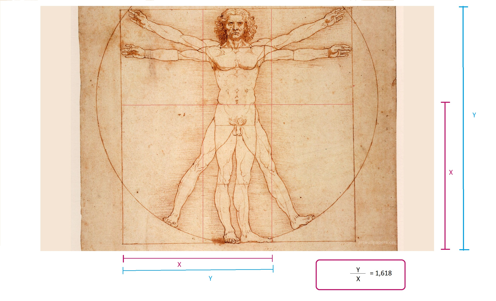

Homem Virtruviano

- No renascimento homem virtruviano, a relação entre a altura total do corpo humano e a altura do tronco, quando comparadas com a altura do umbigo até a sola dos pés, pode se aproximar da proporção áurea. Isso estabelece uma possível correspondência entre a altura do tronco e a altura do umbigo até os pés, formando uma proporção semelhante ao retângulo de ouro.
